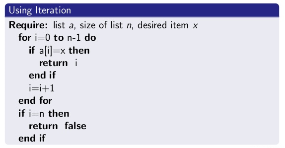
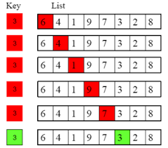

In computer science, linear search or sequential search is a method for finding a target value within a list. Linear search is a process that checks every element in the list sequentially until the desired element is found. The computational complexity for linear search is O(n), making it generally much less efficient than binary search O(log n). But when list items can be arranged in order from greatest to least and the probabilities appear as geometric distribution (f (x)=(1-p) x-1p, x=1,2), then linear search can have the potential to be notably faster than binary search.
 